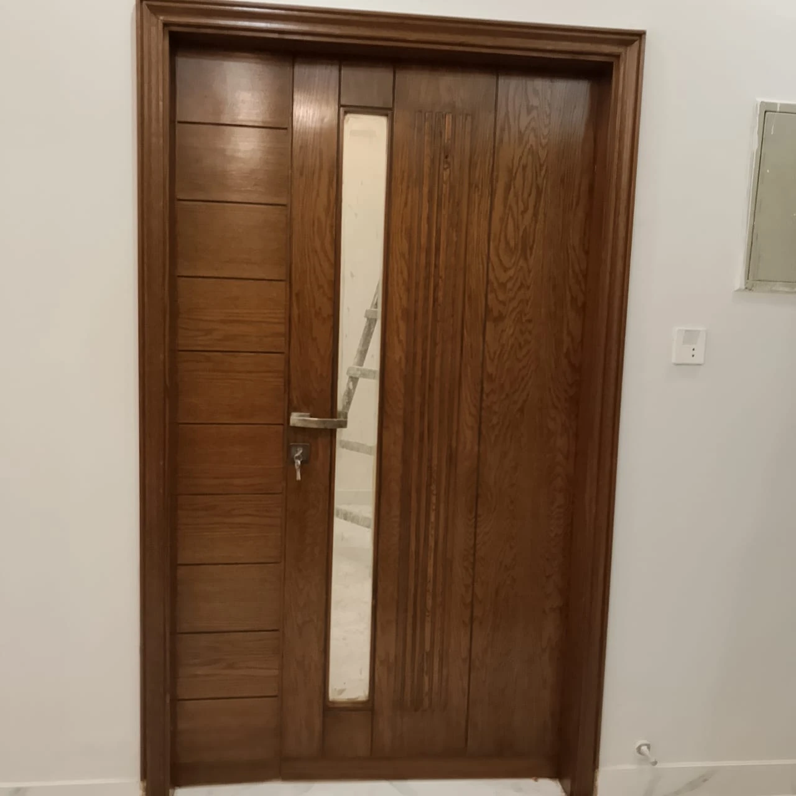
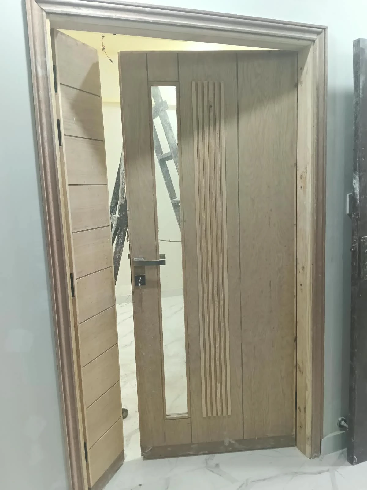
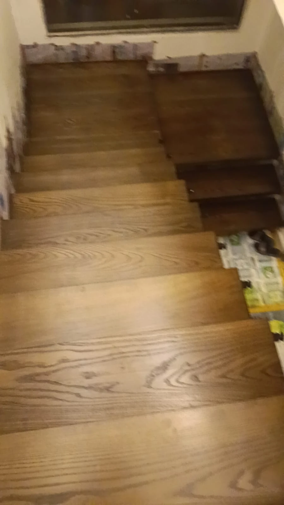
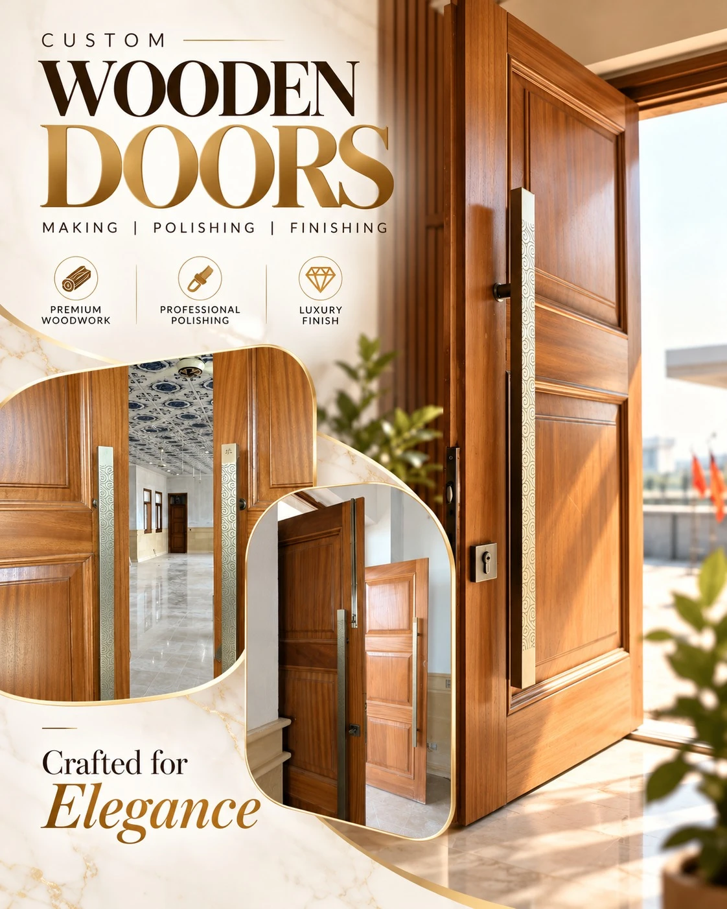

Premium Wood Polishing & Finishing
The finish is what you live with every day. We prepare, stain, seal and polish wood by hand to a deep, even, durable surface — on new doors, windows and furniture, and on pieces you already own.

Our WorkEvery type of wood finishing, done properly
Choose the finish and sheen you want — we'll show you samples on your actual wood before we start.
Raw Wood Polishing
Newly built doors, windows and furniture sanded, sealed and polished from bare wood to a finished surface.
White Wood Finishing
Light, clean finishes for pale woods and modern interiors — without yellowing or blotching.
Premium Wooden Door Polish
Main doors and interior doors finished to a deep, uniform colour that highlights the grain and protects daily use.
Window Polishing
Wooden window frames and shutters sealed and polished to withstand sunlight, heat and moisture.
PU Wood Finishing
Polyurethane finishes for a hard-wearing, scratch- and water-resistant surface in matt, satin or gloss.
Matt & Gloss Finishes
From soft natural matt to mirror gloss — the sheen level you choose, applied evenly across every surface.
Wood Staining
Walnut, oak, teak, wenge or custom shades — stains that colour the wood evenly while keeping its grain visible.
Furniture Refinishing
Old polish stripped, scratches and stains repaired, and the piece refinished in its original or a new colour.
Luxury Interior Wood Finishing
Wall panels, ceilings, staircases, wardrobes and kitchens finished to one consistent standard across the whole home.
From raw wood to finished door
The same solid wood main door — before and after our staining and PU finishing.

Main Door — Walnut Stain + PU FinishFluted detail and natural grain brought out; glass inset and hardware refitted after finishing.

Preparation is 80% of a great finish
A beautiful polish on badly prepared wood never lasts. Our process is built around the steps most people skip.
- Sanding in stages — progressively finer grits until the surface is perfectly smooth.
- Filling & sealing — grain filled and sealed so the colour goes on evenly.
- Staining to a sample — shade approved by you on your actual wood before full application.
- Multiple thin coats — PU or polish built up in thin layers, sanded between coats.
- Final inspection — in daylight and under room lighting, with you.
Making, polishing & finishing — all in one place
Because we manufacture doors and windows ourselves, we control the finish from the first cut to the final coat. Already have doors? We polish those too.
- Main entrance doors
- Interior room doors
- Panel & flush doors
- Wooden window frames
- Door frames & architraves
- Repolishing of existing doors

Wood finishing questions
Yes. Refinishing existing pieces is a core part of our work. We strip the old finish, repair scratches, dents and stains, and refinish in the original colour or a new one. Fitted items like doors, panels and kitchens are usually finished on site.
PU (polyurethane) cures into a hard, sealed layer that resists water, heat and scratches — ideal for doors, kitchens and tables. Traditional polishes give a softer, warmer look and are easier to touch up. We'll recommend the right one for each surface.
Matt and satin hide fingerprints and small marks and suit modern interiors; gloss gives a rich, formal look and reflects light. We prepare samples in both on your wood so you can decide in your own lighting.
It depends on the number of surfaces and the finish. Coats need proper drying time between them, so a quality job cannot be rushed. We give a realistic timeline with the quotation.

Send us a photo — we'll tell you what's possible
A quick WhatsApp photo of the door, window or furniture is enough for an initial estimate.